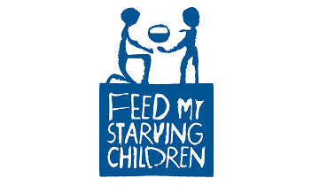
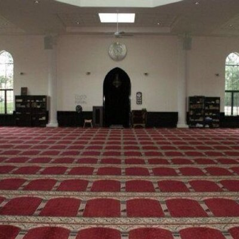

Nabeeha Z Syeda
Phone: 847-596-1974 Email: nabeehasyeda@gmail.com
Volunteering Experience
Barrington Junior Women's Fashion Show
In my senior year of high school, I have volunteered at a fashion show. Fashion is one of my hobbies or interests. I volunteered for the afternoon shift. I helped pass out raffle prizes and tickets. There was a silent bid online and an actual bid in the show. People who have won prizes in the silent bid has to go to a room that has their prize, I have to pass those out. I have to help out the models backstage; I have to let them know when its their cue to walk out. I do have a picture of me in the show. It was one of those experiences that I really enjoyed! here is a pic below:

Feed My Starving Children
I have volunteered at Feed My Starving Children multiple times. The organization make the volunteering experience so much fun. There are four or five different stations. One for putting rice in bags or one for putting grain in bags or the last station is everything to be put in boxes. I love volunteering here because once we pack a box, we all say hurrah! At the end of everything, we see how many meals we packed up.
Mosque during Ramadan
I have volunteered every year at the Mosque during the Ramadan(Except during the pandemic) since I was 13 years old. My family and I are active volunteers. My sister and I would help out the elderly so they can sit properly and pray properly. During Ramadan, Muslims break the fast at sunset and we usually bring big meals to share with everyone. Most of the time, I give the meals to the elderly. We also do clean up after praying ensuring the place will be spotless and clean as it was before. I love helping out at my local Mosque. It warms my heart and I just love helping with my own family. It's something I look forward to every year.
